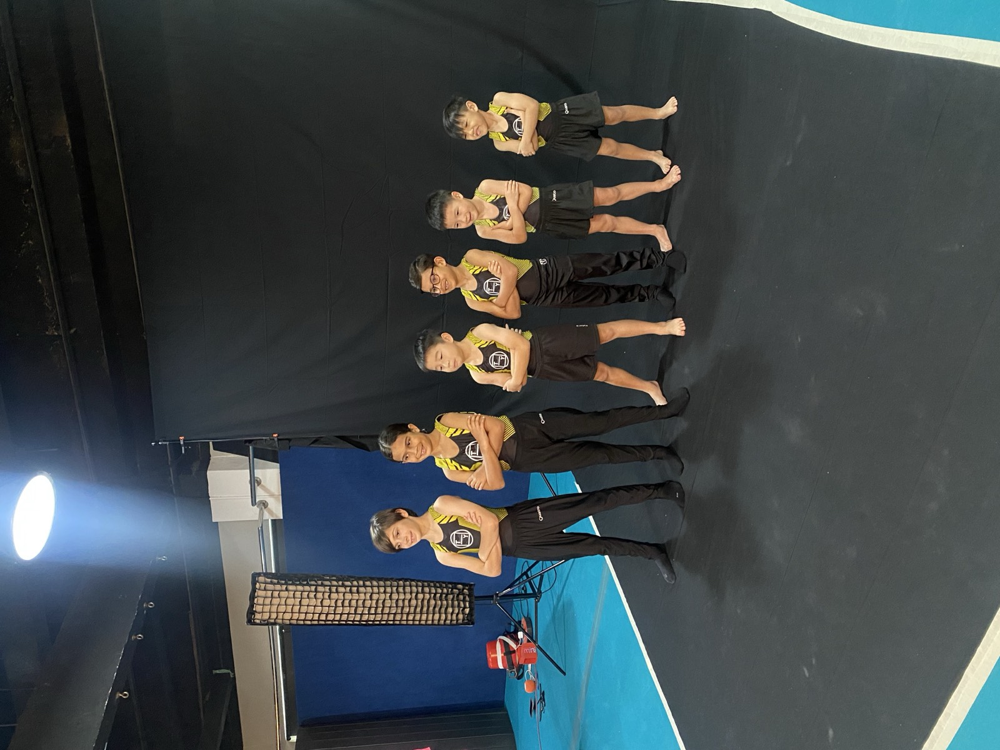

Freestyle Foundation
The entry point: foundational movements with acrobatic flair. Children learn to roll, vault, balance and land safely, then start adding the transitions and tricks that make freestyle theirs.
What a session looks like
Warm-up and conditioning, then guided exploration: foundational gymnastics shapes, acrobatic basics and free-flowing movement lines, coached for safety and quality throughout.

- Where
- Dover Camps bookable · weekly on enquiry
- Jurong, Bukit Timah and Dempsey Not offered